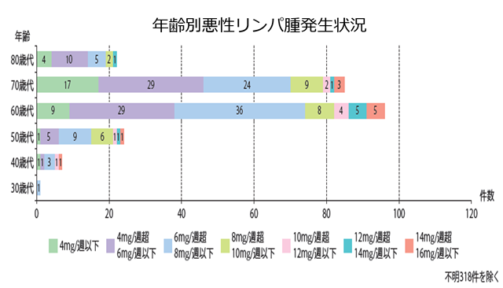

MTX投与に関連するリンパ増殖性疾患が問題になっている
MTX-LPD：MTX関連リンパ増殖性疾患
(methotrexate-associated lymphoproliferative disorder ）
- ●RA 患者では一般人口に比較してリンパ腫の合併が多い*
- ●近年、MTX投与例にて合併することが見出され、MTX-LPD と呼ばれるようになった
- ●LPD診断時年齢は60歳代、70歳代で多い**
- ●投与量8mg/週以下の症例が約8割**
- ●2年以上投与している症例が約9割**
- ●約7割はMTX中止により自然退縮する**
- ●リンパ増殖性疾患が確定診断された場合には、MTXを中止する。再投与は行わない。

高齢者・2年以上使用の患者で多いため、特に高齢者へのMTXの長期間投与には注意が必要である
※リンパ腫はリンパ増殖性疾患のうちのひとつ